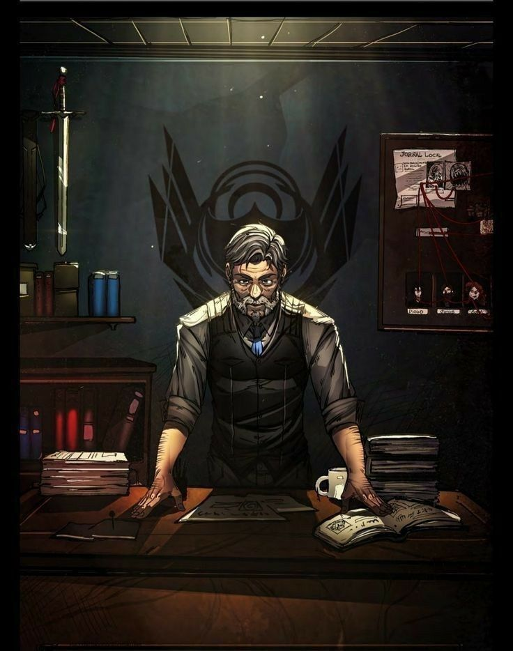

Documento Confidencial
O paranormal é da nossa realidade?
O paranormal não vem de forma natural para nossa realidade, o paranormal vem através da ruptura de uma parede invisível conhecida como Membrana...
Ordo Realitas
Como você chegou aqui é um mistério, mas nós acreditamos que seja algo relacionado ao Outro Lado!!!
Você teve um encontro com o paranormal e agora você tem uma escolha a fazer: ser o nosso mais novo recruta, ou ignorar o paranormal. Mas lembre-se, agora que você viu o Outro Lado, você não estará mais em paz, porque ele vai te incomodar pelo resto da sua vida.
Eu, líder da Ordo Veritatis, Sr. Veríssimo, ficaria feliz de você ser o nosso mais novo recruta, e não se preocupe, você começará com algo simples, uma investigação paranormal, e o resto (o abate) pode ficar tranquilo, você não terá nenhum tipo de problema com criaturas muito fortes.
Se você aceitar se juntar com a gente, você começará seu treino amanhã mesmo, entraremos em contato contigo, não se preocupe...
A Ordem não tem nenhuma responsabilidade legal sobre danos físicos ou psicológicos que você terá, também você não terá nenhum retorno financeiro, apenas irá contribuir para que a Membrana não se rompa ou que o Outro Lado chegue à nossa realidade.
👥 Membros importantes
Temos dois membros importantes em nossa equipe atual, que são eles:

Arthur Cervero: era um músico e membro da gangue de motoqueiros Gaudérios Abutres em Carpazinha, que se juntou à Ordo Realitas após perder seus colegas e família durante uma luta contra o Carniçal Preto da Morte.
Após esse incidente, passou a fazer parte da Equipe E, grupo que investigava a manifestação paranormal conhecida como Santo Berço.
E um tempo depois vira líder da Equipe Abutre, tendo como objetivo encontrar as chamadas Relíquias da Calamidade.
"Eu sou um Gaudério... E a gente morre por quem a gente ama."
- Arthur Cervero

Senhor Veríssimo: não há dados para você saber sobre ele... o que você precisa saber é que ele é o atual líder da Ordem e que quer o bem de todos, principalmente da nossa realidade...
📌 Sobre o Projeto
Aqui foi só uma forma de mostrar nosso afeto pelo trabalho do Cellbit e sua criação do RPG Ordem Paranormal...
Ordem Paranormal é uma franquia de mídia brasileira iniciada como websérie criada pelo streamer Rafael Cellbit Lange e dirigida por Júlio Taubkin, na qual uma equipe de influenciadores joga RPG de mesa.
O show começou a ser transmitido em 29 de fevereiro de 2020 pelo canal da Twitch de Cellbit.